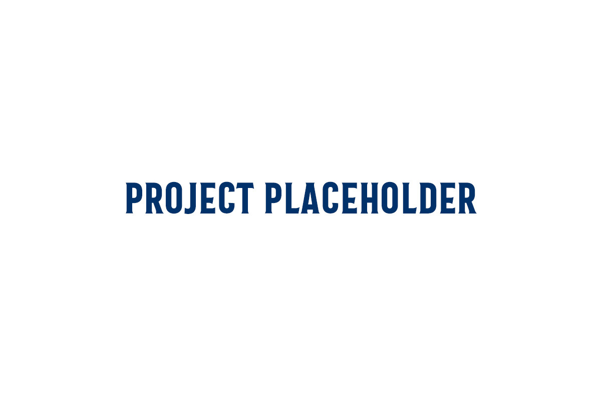
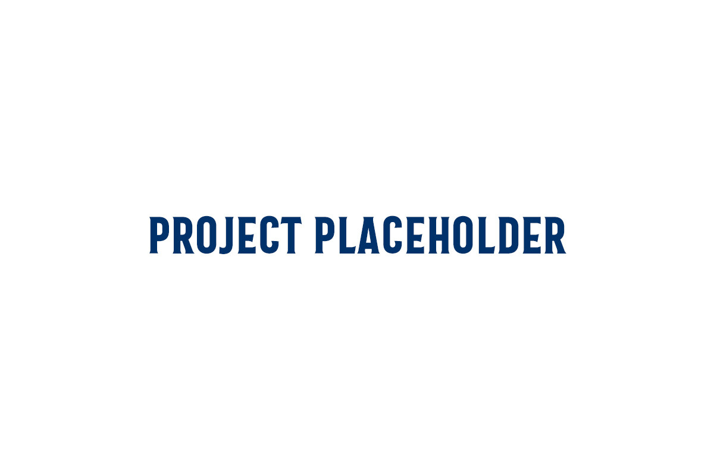

MIPS CPU in Logisim
Built a simple single-cycle CPU in Logisim to execute a small subset of MIPS-style instructions (add, sub, lw, sw, beq). Designed the datapath and control unit, then verified behavior with test programs in the MARS simulator.
I'm Rayan Alamri, a CS student at KFUPM. I enjoy turning small ideas into working prototypes and refining them with feedback. Lately I’ve been exploring web development and automation to solve everyday problems.
Built a simple single-cycle CPU in Logisim to execute a small subset of MIPS-style instructions (add, sub, lw, sw, beq). Designed the datapath and control unit, then verified behavior with test programs in the MARS simulator.
A lightweight website to register teams, generate fixtures, and track standings for the university league. Focused on a clean, mobile-first UI and simple interactions for organizers and players.